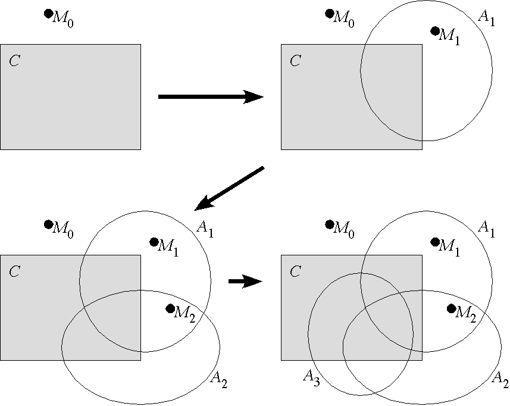

SRASS - Semantic Selection of Axioms

Basic Process
Find model of negated conjecture and axioms selected so far
If no such model, logic consequence is established
Else choose axiom that is
false
in the model
Extended Process
Use
Prophet
to order axioms
Be
greedy
about termination
Cope with
Incomplete
and
inadequate
models
Use
syntax
when semantics fails
Select
many from few
for faster progress
Try
regular ATP
too
Results
Solves 54 of 71
appropriate TPTP problems
, vs. 39 by ATP
Was winning the
MPTP Challenge